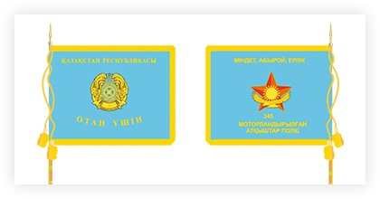

Министерство обороны — орган в составе правительства суверенного государства, управляющий Вооружёнными Силами страны.
Может именоваться: Военное министерство (ВМ), Министерство национальной обороны (МНО), Министерство Вооружённых Сил (МВС).
В СССР применялось официальное сокращение, аббревиатура МО, в Российской Федерации - Минобороны.
Министерство обороны Республики Казахстан — ведомство при Правительстве Республики Казахстан, являющееся центральным исполнительным
органом, осуществляющим государственную политику в сфере обороны, а также руководство Вооружёнными Силами Республики Казахстан.
Министерство обороны Республики Казахстан является центральным исполнительным органом армий Республики Казахстан, осуществляющий
государственную политику в сфере обороны, а также руководство всех частей, подразделении, структур относящихся к Вооруженным Силам
Республики Казахстан. Министерство обороны Республики Казахстан осуществляет свою деятельность в соответствии с Конституцией Республики
Казахстан, актами Президента и Правительства Республики Казахстан, иными нормативными правовыми актами, законами, а также положениями и уставами
министерство обороны.
Боевое знамя воинской части Вооруженных Сил Республики Казахстан состоит из двухстороннего полотнища, древка и шнура с кистями.
Полотнище знамени прямоугольное, размерами: по длине 145 см, по ширине 115 см, изготавливается из сложенного вдвое голубого шелкового фая и по краям с трех сторон обшивается золотистой шелковой бахромой.
На лицевой стороне в середине полотнища нашит золотистым шелком контур Государственного герба Республики Казахстан, размер изображения по высоте 50 см. По верхнему краю полотнища вышита золотистым шелком надпись "Казакстан Республикасы", а по нижнему - "Отан ушин", высота букв надписи - 7,5 см.

На обратной стороне полотнища в центре - аппликация: пятиконечная звезда из шелка цвета бордо с изображением в центре контура солнца и лучей и парящим орлом.
Размер между противоположным вершинами звезды - 56 см, над звездой золотым шелком вышит девиз: "Миндет, абырой, ерлик", а под звездой-номер и наименование воинской части.
Размер цифр по высоте - 10 см, размер букв надписи - 7,5 см. В зависимости от количества слов, входящих в наименование воинской части, размер цифр может быть уменьшен до 6 см, а размер букв - до 4,5 см.
При этом изображение звезды может быть перемещено вверх от центра полотнища Боевого Знамени на расстояние до 12 см.
© Министерство обороны Республики Казахстан
Все права защищены